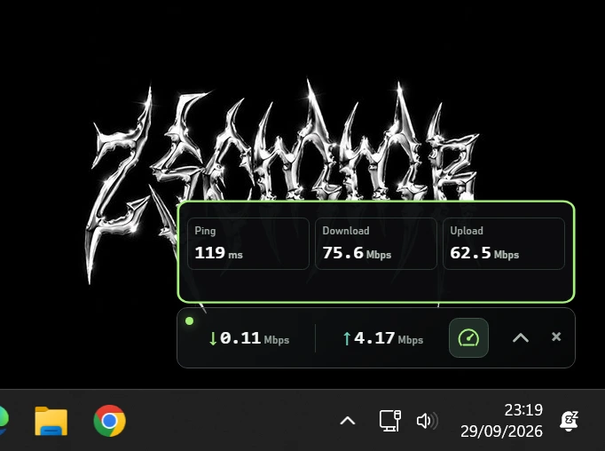
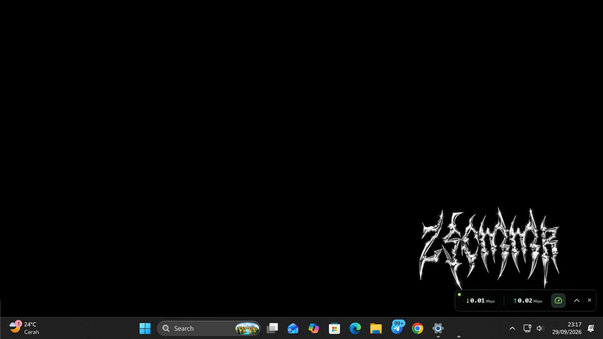
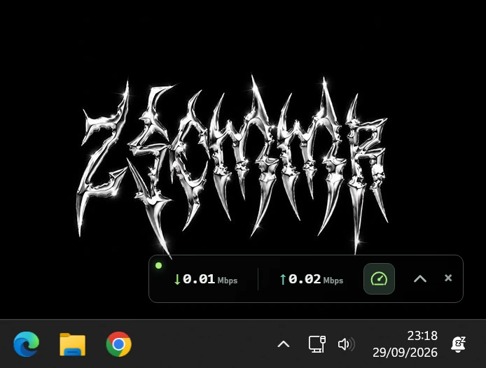
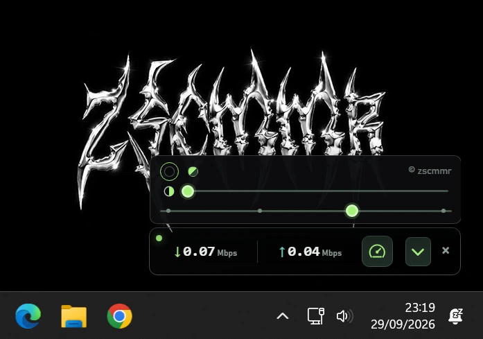

Live internet metrics
Monitor ping, download speed, and upload speed together in one lightweight Windows utility.
NexByte Speed Test is a lightweight Windows app that displays live ping, download and upload speeds, and connection quality in one desktop monitor. Check your network at a glance while you work, stream, or play.
Last updated
See NexByte in action, explore its monitoring features, and find system requirements on the Software page.




Monitor ping, download speed, and upload speed together in one lightweight Windows utility.
Keep an at-a-glance connection monitor visible while you work, stream, or game.
Resize the monitor, adjust transparency, and choose a theme for a cleaner desktop view.
Run a quick internet speed test to measure connection quality with Cloudflare-powered ping, download, and upload data.
NexByte is a Windows utility platform providing network tools, internet speed testing, and desktop applications. Its current app, NexByte Speed Test, displays live ping, download and upload speeds, and connection quality in one compact monitor.
No. This website provides product information and the Windows installer. Run speed tests in the NexByte desktop application.
It shows live ping, download speed, upload speed, and network quality.
NexByte Speed Test supports Windows 10 and Windows 11.
Yes. You can adjust its size and transparency, then choose a theme for your desktop.
Visit the Software page and use the official GitHub release download.
The speed test uses Cloudflare, which may process your IP address and technical connection data to provide measurements. Read the Privacy Policy for details.
I'm Zenk, the developer behind NexByte Speed Test.
I created NexByte Speed Test to help users monitor internet quality with a simple Windows app that tracks ping, download speed, upload speed, and connection health.
I continue improving the app to make network data clearer, easier to read, and more useful for everyday monitoring.

Your rating and comments help us improve NexByte Speed Test.